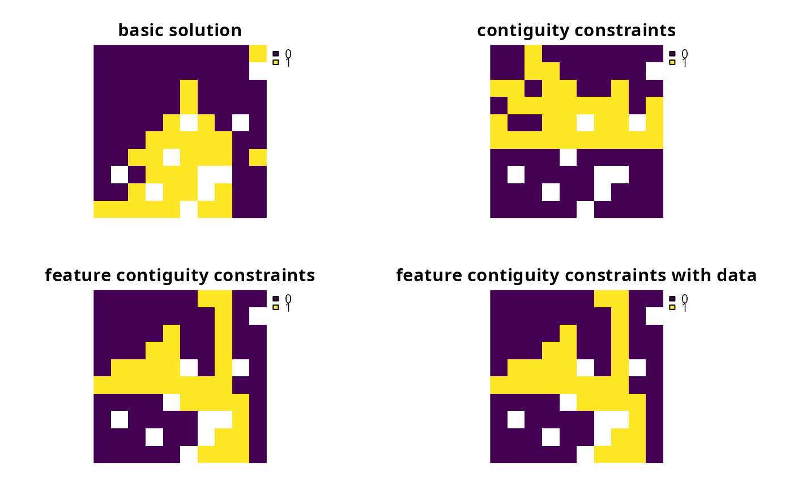
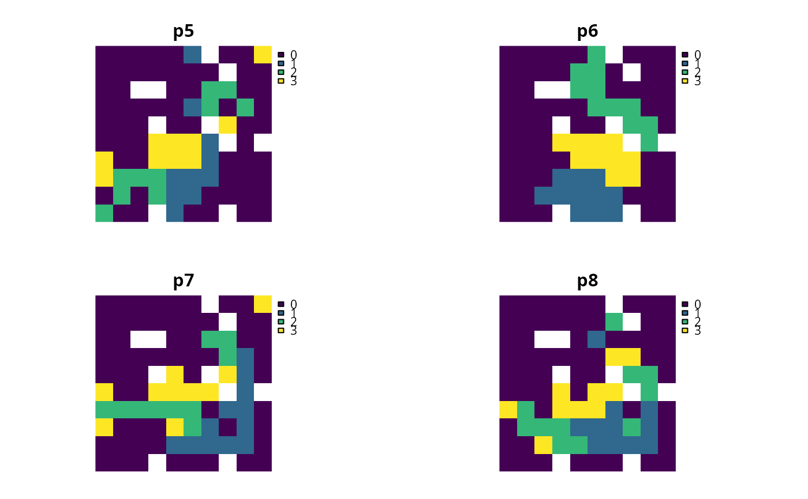

R/add_feature_contiguity_constraints.R
add_feature_contiguity_constraints.RdAdd constraints to a problem to ensure that each feature is
represented in a contiguous unit of dispersible habitat. These constraints
are a more advanced version of those implemented in the
add_contiguity_constraints function, because they ensure that
each feature is represented in a contiguous unit and not that the entire
solution should form a contiguous unit. Additionally, this function
can use data showing the distribution of dispersible habitat for each
feature to ensure that all features can disperse through out the areas
designated for their conservation.
# S4 method for ConservationProblem,ANY,Matrix add_feature_contiguity_constraints(x, zones, data) # S4 method for ConservationProblem,ANY,data.frame add_feature_contiguity_constraints(x, zones, data) # S4 method for ConservationProblem,ANY,matrix add_feature_contiguity_constraints(x, zones, data) # S4 method for ConservationProblem,ANY,ANY add_feature_contiguity_constraints(x, zones, data)
| x |
|
|---|---|
| zones |
|
| data |
|
This function uses connection data to identify solutions that
represent features in contiguous units of dispersible habitat. In earlier
versions of the prioritizr package, it was known as the
add_corridor_constraints function but has since been renamed for
clarity. It was inspired by the mathematical formulations detailed in
\"Onal and Briers (2006) and Cardeira et al. 2010.
Please note that adding these constraints to a problem will
drastically increase the amount of time required to solve it.
The argument to data can be specified in several ways:
NULLconnection data should be calculated automatically
using the connected_matrix function. This is the default
argument and means that all adjacent planning units are treated
as potentially dispersible for all features.
Note that the connection data must be manually defined
using one of the other formats below when the planning unit data
in the argument to x is not spatially referenced (e.g.
in data.frame or numeric format).
matrix, Matrixwhere rows and columns represent
different planning units and the value of each cell indicates if the
two planning units are connected or not. Cell values should be binary
numeric values (i.e. one or zero). Cells that occur along the
matrix diagonal have no effect on the solution at all because each
planning unit cannot be a connected with itself. Note that pairs
of connected planning units are treated as being potentially dispersible
for all features.
data.framecontaining the fields (columns)
"id1", "id2", and "boundary". Here, each row
denotes the connectivity between two planning units following the
Marxan format. The field boundary should contain
binary numeric values that indicate if the two planning units
specified in the fields "id1" and "id2" are connected
or not. This data can be used to describe symmetric or
asymmetric relationships between planning units. By default,
input data is assumed to be symmetric unless asymmetric data is
also included (e.g. if data is present for planning units 2 and 3, then
the same amount of connectivity is expected for planning units 3 and 2,
unless connectivity data is also provided for planning units 3 and 2).
Note that pairs of connected planning units are treated as being
potentially dispersible for all features.
listcontaining matrix, Matrix, or
data.frame objects showing which planning units
should be treated as connected for each feature. Each element in the
list should correspond to a different feature (specifically,
a different target in the problem), and should contain a matrix,
Matrix, or data.frame object that follows the conventions
detailed above.
\"Onal H and Briers RA (2006) Optimal selection of a connected reserve network. Operations Research, 54: 379--388.
Cardeira JO, Pinto LS, Cabeza M and Gaston KJ (2010) Species specific connectivity in reserve-network design using graphs. Biological Conservation, 2: 408--415.
# load data data(sim_pu_raster, sim_pu_zones_stack, sim_features, sim_features_zones) # create minimal problem p1 <- problem(sim_pu_raster, sim_features) %>% add_min_set_objective() %>% add_relative_targets(0.3) # create problem with contiguity constraints p2 <- p1 %>% add_contiguity_constraints() # create problem with constraints to represent features in contiguous # units p3 <- p1 %>% add_feature_contiguity_constraints() # create problem with constraints to represent features in contiguous # units that contain highly suitable habitat values # (specifically in the top 1.5th percentile) cm4 <- lapply(seq_len(nlayers(sim_features)), function(i) { # create connectivity matrix using the i'th feature's habitat data m <- connectivity_matrix(sim_pu_raster, sim_features[[i]]) # convert matrix to TRUE/FALSE values in top 20th percentile m <- m > quantile(as.vector(m), 1 - 0.015, names = FALSE) # convert matrix from TRUE/FALSE to sparse matrix with 0/1s m <- as(m, "dgCMatrix") # remove 0s from the sparse matrix m <- Matrix::drop0(m) # return matrix m }) p4 <- p1 %>% add_feature_contiguity_constraints(data = cm4)# solve problems s1 <- stack(solve(p1), solve(p2), solve(p3), solve(p4))#> Optimize a model with 5 rows, 90 columns and 450 nonzeros #> Variable types: 0 continuous, 90 integer (90 binary) #> Coefficient statistics: #> Matrix range [2e-01, 9e-01] #> Objective range [2e+02, 2e+02] #> Bounds range [1e+00, 1e+00] #> RHS range [9e+00, 2e+01] #> Found heuristic solution: objective 6771.6615498 #> Presolve time: 0.00s #> Presolved: 5 rows, 90 columns, 450 nonzeros #> Variable types: 0 continuous, 90 integer (90 binary) #> Presolved: 5 rows, 90 columns, 450 nonzeros #> #> #> Root relaxation: objective 5.893252e+03, 17 iterations, 0.00 seconds #> #> Nodes | Current Node | Objective Bounds | Work #> Expl Unexpl | Obj Depth IntInf | Incumbent BestBd Gap | It/Node Time #> #> 0 0 5893.25206 0 4 6771.66155 5893.25206 13.0% - 0s #> H 0 0 6020.6992199 5893.25206 2.12% - 0s #> #> Explored 1 nodes (17 simplex iterations) in 0.00 seconds #> Thread count was 1 (of 4 available processors) #> #> Solution count 2: 6020.7 6771.66 #> #> Optimal solution found (tolerance 1.00e-01) #> Best objective 6.020699219925e+03, best bound 5.893252057707e+03, gap 2.1168% #> Optimize a model with 236 rows, 234 columns and 1202 nonzeros #> Variable types: 0 continuous, 234 integer (234 binary) #> Coefficient statistics: #> Matrix range [2e-01, 1e+00] #> Objective range [2e+02, 2e+02] #> Bounds range [1e+00, 1e+00] #> RHS range [1e+00, 2e+01] #> Presolve removed 23 rows and 24 columns #> Presolve time: 0.02s #> Presolved: 213 rows, 210 columns, 949 nonzeros #> Variable types: 0 continuous, 210 integer (210 binary) #> Presolved: 213 rows, 210 columns, 949 nonzeros #> #> #> Root relaxation: objective 5.997674e+03, 128 iterations, 0.00 seconds #> #> Nodes | Current Node | Objective Bounds | Work #> Expl Unexpl | Obj Depth IntInf | Incumbent BestBd Gap | It/Node Time #> #> 0 0 5997.67418 0 86 - 5997.67418 - - 0s #> 0 0 6008.56074 0 102 - 6008.56074 - - 0s #> 0 0 6009.23905 0 101 - 6009.23905 - - 0s #> 0 0 6010.81931 0 99 - 6010.81931 - - 0s #> 0 0 6013.98037 0 93 - 6013.98037 - - 0s #> 0 0 6014.18624 0 102 - 6014.18624 - - 0s #> 0 0 6014.18624 0 102 - 6014.18624 - - 0s #> 0 0 6014.18624 0 101 - 6014.18624 - - 0s #> 0 0 6014.18624 0 101 - 6014.18624 - - 0s #> H 0 0 6502.3865609 6014.18624 7.51% - 0s #> #> Cutting planes: #> Gomory: 4 #> Clique: 2 #> Zero half: 6 #> #> Explored 1 nodes (306 simplex iterations) in 0.07 seconds #> Thread count was 1 (of 4 available processors) #> #> Solution count 1: 6502.39 #> #> Optimal solution found (tolerance 1.00e-01) #> Best objective 6.502386560851e+03, best bound 6.014186243834e+03, gap 7.5080% #> Optimize a model with 1610 rows, 1260 columns and 5110 nonzeros #> Variable types: 0 continuous, 1260 integer (1260 binary) #> Coefficient statistics: #> Matrix range [2e-01, 1e+00] #> Objective range [2e+02, 2e+02] #> Bounds range [1e+00, 1e+00] #> RHS range [1e+00, 2e+01] #> Presolve removed 192 rows and 193 columns #> Presolve time: 0.05s #> Presolved: 1418 rows, 1067 columns, 4035 nonzeros #> Variable types: 0 continuous, 1067 integer (1067 binary) #> Presolved: 1418 rows, 1067 columns, 4035 nonzeros #> #> #> Root relaxation: objective 5.997674e+03, 1427 iterations, 0.04 seconds #> #> Nodes | Current Node | Objective Bounds | Work #> Expl Unexpl | Obj Depth IntInf | Incumbent BestBd Gap | It/Node Time #> #> 0 0 5997.67418 0 478 - 5997.67418 - - 0s #> 0 0 6006.92543 0 537 - 6006.92543 - - 0s #> 0 0 6007.14845 0 539 - 6007.14845 - - 0s #> 0 0 6007.18402 0 539 - 6007.18402 - - 0s #> 0 0 6010.48346 0 566 - 6010.48346 - - 0s #> 0 0 6010.66990 0 559 - 6010.66990 - - 0s #> 0 0 6010.66990 0 559 - 6010.66990 - - 0s #> 0 0 6010.66990 0 560 - 6010.66990 - - 0s #> 0 0 6010.66990 0 562 - 6010.66990 - - 0s #> 0 0 6010.93549 0 564 - 6010.93549 - - 0s #> 0 0 6010.93549 0 565 - 6010.93549 - - 0s #> 0 0 6010.93549 0 554 - 6010.93549 - - 0s #> 0 0 6010.93549 0 554 - 6010.93549 - - 0s #> H 0 0 12969.592530 6010.93549 53.7% - 0s #> 0 2 6010.97912 0 554 12969.5925 6010.97912 53.7% - 0s #> H 19 19 6102.0477989 6010.97912 1.49% 120 0s #> #> Cutting planes: #> Gomory: 3 #> Zero half: 8 #> Mod-K: 1 #> #> Explored 19 nodes (5260 simplex iterations) in 0.81 seconds #> Thread count was 1 (of 4 available processors) #> #> Solution count 2: 6102.05 12969.6 #> #> Optimal solution found (tolerance 1.00e-01) #> Best objective 6.102047798888e+03, best bound 6.010979115174e+03, gap 1.4924% #> Optimize a model with 1076 rows, 915 columns and 3541 nonzeros #> Variable types: 0 continuous, 915 integer (915 binary) #> Coefficient statistics: #> Matrix range [2e-01, 1e+00] #> Objective range [2e+02, 2e+02] #> Bounds range [1e+00, 1e+00] #> RHS range [1e+00, 2e+01] #> Presolve removed 579 rows and 511 columns #> Presolve time: 0.03s #> Presolved: 497 rows, 404 columns, 1367 nonzeros #> Variable types: 0 continuous, 404 integer (404 binary) #> Presolved: 497 rows, 404 columns, 1367 nonzeros #> #> #> Root relaxation: objective 1.159364e+04, 480 iterations, 0.01 seconds #> #> Nodes | Current Node | Objective Bounds | Work #> Expl Unexpl | Obj Depth IntInf | Incumbent BestBd Gap | It/Node Time #> #> 0 0 11593.6352 0 82 - 11593.6352 - - 0s #> H 0 0 12521.797242 11593.6352 7.41% - 0s #> #> Explored 1 nodes (625 simplex iterations) in 0.05 seconds #> Thread count was 1 (of 4 available processors) #> #> Solution count 1: 12521.8 #> #> Optimal solution found (tolerance 1.00e-01) #> Best objective 1.252179724228e+04, best bound 1.159363520061e+04, gap 7.4124%# plot solutions plot(s1, axes = FALSE, box = FALSE, main = c("basic solution", "contiguity constraints", "feature contiguity constraints", "feature contiguity constraints with data"))# create minimal problem with multiple zones, and limit the solver to # 30 seconds to obtain solutions in a feasible period of time p5 <- problem(sim_pu_zones_stack, sim_features_zones) %>% add_min_set_objective() %>% add_relative_targets(matrix(0.1, ncol = 3, nrow = 5)) %>% add_default_solver(time_limit = 30) %>% add_binary_decisions() # create problem with contiguity constraints that specify that the # planning units used to conserve each feature in different management # zones must form separate contiguous units p6 <- p5 %>% add_feature_contiguity_constraints(diag(3)) # create problem with contiguity constraints that specify that the # planning units used to conserve each feature must form a single # contiguous unit if the planning units are allocated to zones 1 and 2 # and do not need to form a single contiguous unit if they are allocated # to zone 3 zm7 <- matrix(0, ncol = 3, nrow = 3) zm7[seq_len(2), seq_len(2)] <- 1 print(zm7)#> [,1] [,2] [,3] #> [1,] 1 1 0 #> [2,] 1 1 0 #> [3,] 0 0 0p7 <- p5 %>% add_feature_contiguity_constraints(zm7) # create problem with contiguity constraints that specify that all of # the planning units in all three of the zones must conserve first feature # in a single contiguous unit but the planning units used to conserve the # remaining features do not need to be contiguous in any way zm8 <- lapply(seq_len(number_of_features(sim_features_zones)), function(i) matrix(ifelse(i == 1, 1, 0), ncol = 3, nrow = 3)) print(zm8)#> [[1]] #> [,1] [,2] [,3] #> [1,] 1 1 1 #> [2,] 1 1 1 #> [3,] 1 1 1 #> #> [[2]] #> [,1] [,2] [,3] #> [1,] 0 0 0 #> [2,] 0 0 0 #> [3,] 0 0 0 #> #> [[3]] #> [,1] [,2] [,3] #> [1,] 0 0 0 #> [2,] 0 0 0 #> [3,] 0 0 0 #> #> [[4]] #> [,1] [,2] [,3] #> [1,] 0 0 0 #> [2,] 0 0 0 #> [3,] 0 0 0 #> #> [[5]] #> [,1] [,2] [,3] #> [1,] 0 0 0 #> [2,] 0 0 0 #> [3,] 0 0 0 #>p8 <- p5 %>% add_feature_contiguity_constraints(zm8)# solve problems s2 <- lapply(list(p5, p6, p7, p8), solve)#> Optimize a model with 105 rows, 270 columns and 1620 nonzeros #> Variable types: 0 continuous, 270 integer (270 binary) #> Coefficient statistics: #> Matrix range [2e-01, 1e+00] #> Objective range [2e+02, 2e+02] #> Bounds range [1e+00, 1e+00] #> RHS range [1e+00, 8e+00] #> Found heuristic solution: objective 6831.3431381 #> Presolve time: 0.00s #> Presolved: 105 rows, 270 columns, 1620 nonzeros #> Variable types: 0 continuous, 270 integer (270 binary) #> Presolved: 105 rows, 270 columns, 1620 nonzeros #> #> #> Root relaxation: objective 5.950934e+03, 79 iterations, 0.00 seconds #> #> Nodes | Current Node | Objective Bounds | Work #> Expl Unexpl | Obj Depth IntInf | Incumbent BestBd Gap | It/Node Time #> #> 0 0 5950.93434 0 11 6831.34314 5950.93434 12.9% - 0s #> H 0 0 6078.1123440 5950.93434 2.09% - 0s #> #> Explored 1 nodes (79 simplex iterations) in 0.01 seconds #> Thread count was 1 (of 4 available processors) #> #> Solution count 2: 6078.11 6831.34 #> #> Optimal solution found (tolerance 1.00e-01) #> Best objective 6.078112344026e+03, best bound 5.950934338290e+03, gap 2.0924% #> Optimize a model with 4935 rows, 3795 columns and 15660 nonzeros #> Variable types: 0 continuous, 3795 integer (3795 binary) #> Coefficient statistics: #> Matrix range [2e-01, 1e+00] #> Objective range [2e+02, 2e+02] #> Bounds range [1e+00, 1e+00] #> RHS range [1e+00, 8e+00] #> Presolve removed 378 rows and 378 columns #> Presolve time: 0.50s #> Presolved: 4557 rows, 3417 columns, 14199 nonzeros #> Variable types: 0 continuous, 3417 integer (3417 binary) #> Presolved: 4557 rows, 3417 columns, 14199 nonzeros #> #> #> Root relaxation: objective 5.980147e+03, 4696 iterations, 0.22 seconds #> #> Nodes | Current Node | Objective Bounds | Work #> Expl Unexpl | Obj Depth IntInf | Incumbent BestBd Gap | It/Node Time #> #> 0 0 5980.14710 0 1008 - 5980.14710 - - 0s #> 0 0 6056.85909 0 914 - 6056.85909 - - 1s #> 0 0 6069.19558 0 841 - 6069.19558 - - 1s #> 0 0 6069.19969 0 877 - 6069.19969 - - 1s #> 0 0 6072.51569 0 904 - 6072.51569 - - 1s #> 0 0 6072.51569 0 905 - 6072.51569 - - 1s #> 0 0 6072.60399 0 961 - 6072.60399 - - 1s #> 0 0 6072.60399 0 962 - 6072.60399 - - 1s #> 0 0 6072.73350 0 934 - 6072.73350 - - 1s #> 0 0 6073.48680 0 1004 - 6073.48680 - - 1s #> 0 0 6074.07986 0 967 - 6074.07986 - - 2s #> 0 0 6074.27052 0 950 - 6074.27052 - - 2s #> 0 0 6074.27538 0 950 - 6074.27538 - - 2s #> 0 0 6074.55538 0 940 - 6074.55538 - - 2s #> 0 0 6074.55538 0 940 - 6074.55538 - - 2s #> 0 0 6074.68851 0 943 - 6074.68851 - - 2s #> 0 0 6074.68851 0 940 - 6074.68851 - - 2s #> 0 2 6074.70320 0 940 - 6074.70320 - - 3s #> H 101 76 7754.0714340 6074.77689 21.7% 175 4s #> 105 77 6078.33975 4 920 7754.07143 6075.15909 21.7% 177 5s #> H 209 140 7367.6777105 6075.60511 17.5% 181 8s #> 255 186 6621.62373 37 521 7367.67771 6075.60511 17.5% 202 10s #> H 263 186 7161.3858483 6075.60511 15.2% 201 10s #> H 371 265 7158.4655202 6075.61530 15.1% 205 14s #> 387 283 6171.43862 15 759 7158.46552 6075.67567 15.1% 206 15s #> H 452 328 7106.2294869 6075.67567 14.5% 222 18s #> 511 364 6122.67533 11 940 7106.22949 6075.68288 14.5% 211 21s #> 521 371 6087.56105 9 1098 7106.22949 6075.68288 14.5% 207 25s #> 530 377 6744.09234 18 1115 7106.22949 6076.33520 14.5% 203 30s #> #> Cutting planes: #> Gomory: 5 #> Cover: 3 #> MIR: 5 #> StrongCG: 1 #> Flow cover: 1 #> Zero half: 14 #> Mod-K: 1 #> #> Explored 530 nodes (144496 simplex iterations) in 30.25 seconds #> Thread count was 1 (of 4 available processors) #> #> Solution count 5: 7106.23 7158.47 7161.39 ... 7754.07 #> #> Time limit reached #> Best objective 7.106229486860e+03, best bound 6.076335202779e+03, gap 14.4928% #> Optimize a model with 4495 rows, 3795 columns and 14780 nonzeros #> Variable types: 0 continuous, 3795 integer (3795 binary) #> Coefficient statistics: #> Matrix range [2e-01, 1e+00] #> Objective range [2e+02, 2e+02] #> Bounds range [1e+00, 1e+00] #> RHS range [1e+00, 8e+00] #> Presolve removed 651 rows and 655 columns #> Presolve time: 0.45s #> Presolved: 3844 rows, 3140 columns, 12616 nonzeros #> Variable types: 0 continuous, 3140 integer (3140 binary) #> Presolve removed 750 rows and 81 columns #> Presolved: 3094 rows, 3059 columns, 10609 nonzeros #> #> #> Root relaxation: objective 5.990459e+03, 3479 iterations, 0.12 seconds #> #> Nodes | Current Node | Objective Bounds | Work #> Expl Unexpl | Obj Depth IntInf | Incumbent BestBd Gap | It/Node Time #> #> 0 0 5990.45895 0 547 - 5990.45895 - - 0s #> 0 0 6053.42210 0 592 - 6053.42210 - - 0s #> 0 0 6072.76130 0 571 - 6072.76130 - - 1s #> 0 0 6073.07352 0 569 - 6073.07352 - - 1s #> 0 0 6078.74287 0 574 - 6078.74287 - - 1s #> 0 0 6078.86706 0 565 - 6078.86706 - - 1s #> 0 0 6078.90848 0 565 - 6078.90848 - - 1s #> 0 0 6078.90848 0 565 - 6078.90848 - - 1s #> 0 0 6079.13561 0 649 - 6079.13561 - - 1s #> 0 0 6079.19266 0 661 - 6079.19266 - - 1s #> 0 0 6079.22067 0 650 - 6079.22067 - - 1s #> 0 0 6079.26319 0 660 - 6079.26319 - - 1s #> 0 0 6079.29967 0 652 - 6079.29967 - - 1s #> 0 0 6079.30064 0 652 - 6079.30064 - - 1s #> 0 0 6079.33879 0 660 - 6079.33879 - - 1s #> 0 0 6079.36633 0 661 - 6079.36633 - - 1s #> 0 0 6079.38881 0 642 - 6079.38881 - - 1s #> 0 0 6079.38881 0 642 - 6079.38881 - - 1s #> 0 2 6079.38991 0 642 - 6079.38991 - - 2s #> H 150 110 6902.8709943 6079.40821 11.9% 169 4s #> H 150 110 6894.6318009 6079.40821 11.8% 169 4s #> 165 121 6138.42826 11 425 6894.63180 6079.42102 11.8% 190 5s #> H 177 130 6873.0205848 6079.42102 11.5% 208 5s #> H 204 151 6872.3651957 6079.42102 11.5% 237 6s #> H 233 115 6653.6280407 6079.42102 8.63% 214 7s #> #> Cutting planes: #> Gomory: 4 #> Cover: 6 #> MIR: 7 #> StrongCG: 2 #> Zero half: 19 #> #> Explored 233 nodes (62192 simplex iterations) in 7.22 seconds #> Thread count was 1 (of 4 available processors) #> #> Solution count 5: 6653.63 6872.37 6873.02 ... 6902.87 #> #> Optimal solution found (tolerance 1.00e-01) #> Best objective 6.653628040699e+03, best bound 6.079421017984e+03, gap 8.6300% #> Optimize a model with 2584 rows, 2490 columns and 8328 nonzeros #> Variable types: 0 continuous, 2490 integer (2490 binary) #> Coefficient statistics: #> Matrix range [2e-01, 1e+00] #> Objective range [2e+02, 2e+02] #> Bounds range [1e+00, 1e+00] #> RHS range [1e+00, 8e+00] #> Presolve removed 1080 rows and 1080 columns #> Presolve time: 0.05s #> Presolved: 1504 rows, 1410 columns, 6879 nonzeros #> Variable types: 0 continuous, 1410 integer (1410 binary) #> Presolve removed 290 rows and 0 columns #> Presolved: 1214 rows, 1410 columns, 6009 nonzeros #> #> #> Root relaxation: objective 5.988773e+03, 1718 iterations, 0.05 seconds #> #> Nodes | Current Node | Objective Bounds | Work #> Expl Unexpl | Obj Depth IntInf | Incumbent BestBd Gap | It/Node Time #> #> 0 0 5988.77268 0 239 - 5988.77268 - - 0s #> 0 0 6043.98890 0 261 - 6043.98890 - - 0s #> 0 0 6052.93661 0 273 - 6052.93661 - - 0s #> 0 0 6078.74538 0 301 - 6078.74538 - - 0s #> 0 0 6078.74538 0 301 - 6078.74538 - - 0s #> 0 0 6080.77502 0 315 - 6080.77502 - - 0s #> 0 0 6080.89587 0 319 - 6080.89587 - - 0s #> 0 0 6083.62816 0 335 - 6083.62816 - - 0s #> 0 0 6083.63102 0 335 - 6083.63102 - - 0s #> 0 0 6083.93088 0 324 - 6083.93088 - - 0s #> 0 0 6083.98821 0 331 - 6083.98821 - - 0s #> 0 0 6083.99033 0 332 - 6083.99033 - - 0s #> 0 0 6084.69805 0 290 - 6084.69805 - - 0s #> 0 0 6084.75142 0 328 - 6084.75142 - - 0s #> 0 0 6084.79055 0 315 - 6084.79055 - - 0s #> 0 0 6084.79055 0 313 - 6084.79055 - - 0s #> 0 2 6084.79438 0 313 - 6084.79438 - - 0s #> H 48 48 6738.5100214 6084.79438 9.70% 76.6 1s #> #> Cutting planes: #> Gomory: 3 #> Cover: 3 #> Zero half: 16 #> #> Explored 48 nodes (7028 simplex iterations) in 1.08 seconds #> Thread count was 1 (of 4 available processors) #> #> Solution count 1: 6738.51 #> #> Optimal solution found (tolerance 1.00e-01) #> Best objective 6.738510021402e+03, best bound 6.084794384222e+03, gap 9.7012%s2 <- stack(lapply(s2, category_layer)) # plot solutions plot(s2, main = c("p5", "p6", "p7", "p8"), axes = FALSE, box = FALSE)